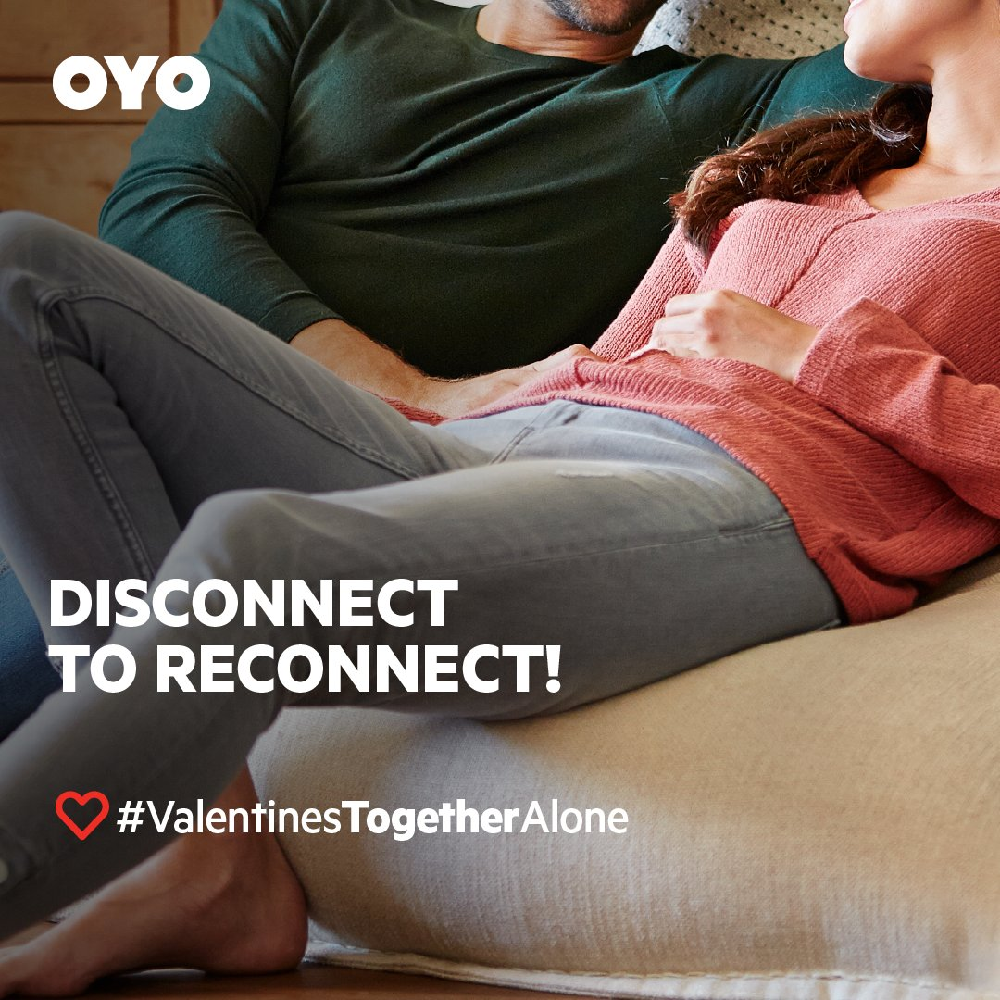
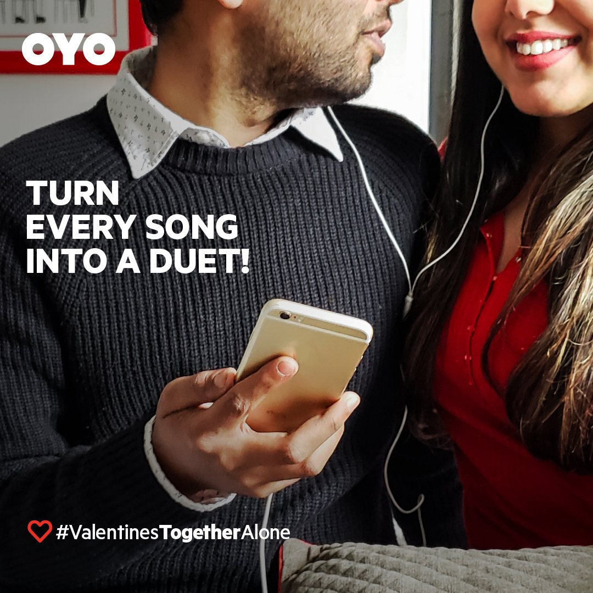

From romance to companionship.
At OYO, the brand challenge was not just seasonal visibility. It was narrative breadth. The business needed to speak credibly to consumers without fragmenting the core message.
Reposition Valentine's Day
Move the cultural narrative beyond couples to celebrate companionship across all social groups.
Normalize Inclusivity
Normalize celebration with friends, family, and solo travellers.
Drive Engagement
Build emotional affinity and organic social participation through user-generated content and data PR.
Multichannel campaign architecture.
Integrated Teams
Brand, offline marketing, conversions, PR, and OYO Townhouse teams aligned on one message architecture.
Always-on Series
A 14-day social content sequence across Facebook and Instagram to sustain momentum.
Creator + Community
Influencer stays at OYO Homes combined with user-generated content amplification.
Data PR
Launched OYO Love Index 2019 from booking insights to validate the cultural shift with evidence.
"February 14 is no longer only about couples; it is increasingly a companionship occasion across social groups."
Campaign visuals & assets.






Measurable cultural shift.
7+ Lakhs Organic impressions generated across the campaign period.
~6,000 New followers acquired organically.
~5% Engagement rate sustained during the 14-day run.
112% Increase In bookings compared to the same period in the previous year.
Diversified Mix Booking mix shifted to 63% couples and 22% friends/family (high-growth segment). Goa emerged as top couples destination, followed by Delhi and Bangalore.